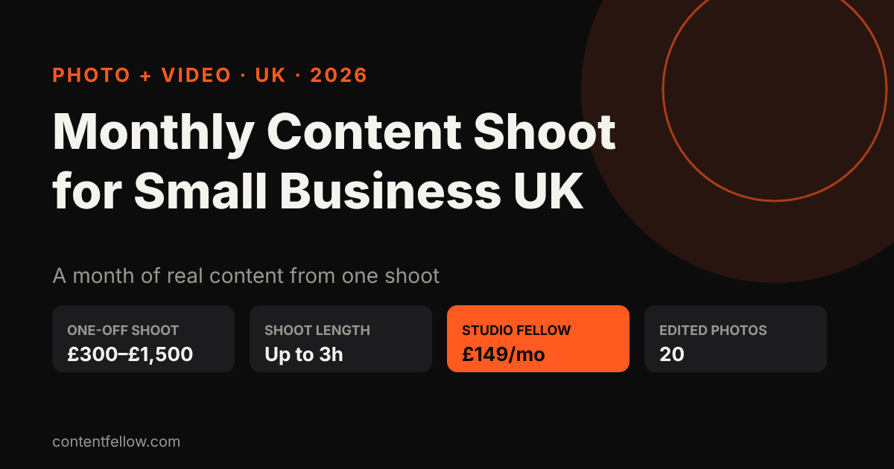
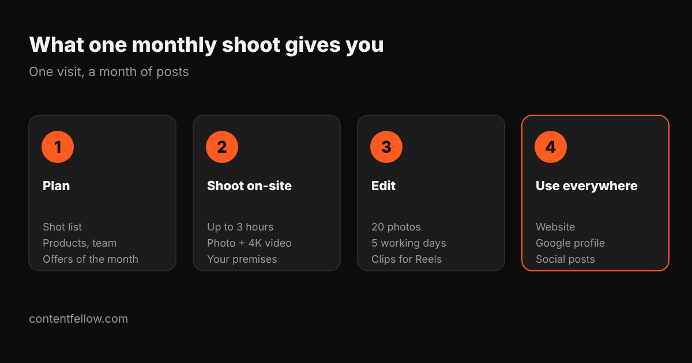

Monthly Content Shoot for Small Business UK: What You Get and What It Costs (2026)
Content production and video shoots for small businesses monthly plan UK
A monthly content production plan for a UK small business usually costs £149–£1,500 a month. ContentFellow's Studio Fellow is £149 a month (no VAT): one on-site shoot of up to 3 hours, photo and 4K video, and 20 edited photos in 5 working days. Add the Creator Fellow (£119) for edited Reels and TikToks.
UK price comparison (checked October 2026)
| Provider | Published price | What you get / notes |
|---|---|---|
| ContentFellow Studio Fellow | £149/mo, no VAT | 1 shoot ≤3h, photo + 4K video, 20 edited photos |
| UK freelance videographer | £200–£900 per day | Plus editing |
| UK production company | £2,000+ per project | One-off campaigns |
Prices are from each provider's public page or the guides cited on this page; competitor prices may add VAT and change often. ContentFellow is not VAT registered, so its prices are the full amount.
What is the cheapest option?
The cheapest way to get regular shoots is a monthly plan rather than day-rate bookings: ContentFellow's Studio Fellow is £149 a month, less than most UK half-day rates.
Start a free trial → No card, no contract. Updated 19 October 2026.
Monthly content shoot for small business UK: what is it?
Quick answer: A monthly content shoot for a small business in the UK is one planned photo and video session each month that gives you fresh pictures and clips for your website, Google profile and social media. One-off business shoots usually cost £300–£1,500, while ContentFellow's Studio Fellow includes one on-site shoot of up to 3 hours, photo and 4K video, and 20 edited photos in 5 working days for £149 a month. (Updated October 2026.)

TL;DR: A monthly shoot solves the "we have nothing to post" problem. You get real photos of your team, products and work every month, which customers trust more than stock images.
What you get from a monthly shoot

- A shot list planned with you: this month's offers, new products, team, behind the scenes.
- On-site filming at your premises, up to 3 hours.
- Photo and 4K video, so the same visit feeds your website and your Reels.
- 20 edited photos within 5 working days, plus raw clips ready for an editor.
What does a content shoot cost in the UK?
| Option | Typical UK price | Notes |
|---|---|---|
| Freelance photographer, hourly | £75–£200 an hour | Photos only, editing often extra |
| Half-day photo + video shoot | £300–£1,500 | Booked one at a time |
| Agency content retainer | £1,000–£3,000+ a month | Shoot plus strategy and posting |
| Studio Fellow (ContentFellow) | £149 a month | 1 shoot up to 3h, photo + 4K video, 20 photos |
ContentFellow is not VAT registered, so £149 is what you pay. Full details: videographer costs in the UK and Burnley videographer prices.
Who can film content for my business every month?
Local photographers and videographers, content agencies, or a monthly plan like the Studio Fellow. Shoots are on-site across Burnley and East Lancashire (about 20 miles), with editing and everything else done remotely. Outside that area, ask us for options.
Turning one shoot into a month of posts
The shoot is the raw material. To turn it into finished content:
- Creator Fellow (£119/mo): 8 short videos, a motion graphics video and a podcast edit.
- Social Fellow: Manage + Post (£129/mo): daily posting on up to 3 platforms.
- Growth Fellow (£389/mo): all five Fellows, one plan and one report.
Frequently asked questions
What is a monthly content shoot?
One planned photo and video session each month that gives a business fresh, real content for its website, Google profile and social media.
How much is a monthly content shoot in the UK?
One-off shoots usually cost £300 to £1,500. ContentFellow's Studio Fellow is £149 a month for one shoot of up to 3 hours with photo, 4K video and 20 edited photos.
Who can film content for my business every month?
A local photographer or videographer, a content agency, or a monthly plan such as the Studio Fellow, which shoots on-site across Burnley and East Lancashire.
Can I try it first?
Yes. The Studio Fellow starts with a free mini shoot.
Do I own the photos and videos?
Yes, you can use them on your website, social media and ads.
See all services and prices → · More quick answers on our answers page. Want a site you own? See development packages and website care plans.
Sources: ContentFellow plans and prices from contentfellow.com/pricing/ (October 2026); UK market ranges are typical quotes from UK freelancer marketplaces and agency price pages checked October 2026. Last updated 19 October 2026.